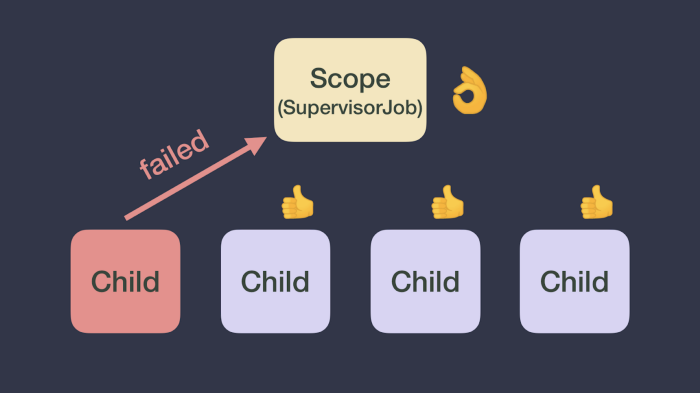
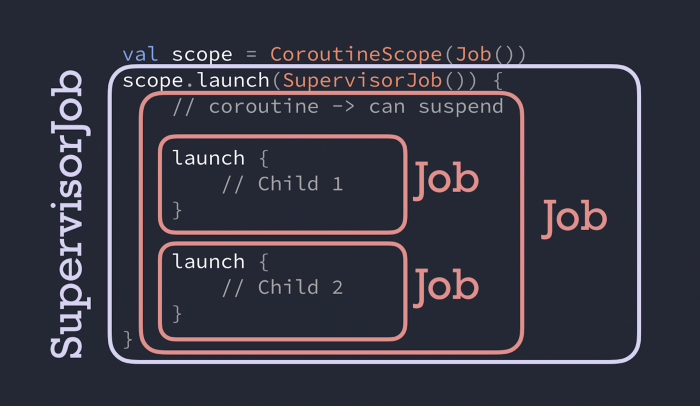

Exception trong coroutine
Tất cả những điều bạn cần biết về exception trong coroutine
Chúng ta, những nhà phát triển, thường dành rất nhiều thời gian để trau chuốt cho con đường thuận khi phát triển ứng dụng. Tuy nhiên, cũng quan trọng không kém là cung cấp trải nghiệm người dùng tốt khi mọi thứ không diễn ra như mong đợi. Một mặt, việc thấy ứng dụng bị crash là một trải nghiệm tồi tệ đối với người dùng; mặt khác, hiển thị thông báo phù hợp cho người dùng khi một hành động không thành công là điều không thể thiếu.
Việc xử lý exception đúng cách có ảnh hưởng rất lớn đến cách người dùng cảm nhận ứng dụng của bạn. Trong bài viết này, chúng tôi sẽ giải thích cách exception được lan truyền trong coroutines và cách bạn luôn có thể kiểm soát, bao gồm các cách khác nhau để xử lý chúng.
Một coroutine bất ngờ bị fail! Làm gì bây giờ? 😱
Khi một coroutine gặp exception, nó sẽ truyền exception đó lên cho coroutine cha của nó! Sau đó, coroutine cha sẽ:
- Hủy bỏ tất cả các coroutine con còn lại của nó.
- Hủy bỏ chính nó.
- Truyền exception lên cho coroutine cha của nó.
Lỗi sẽ tiếp tục lan truyền cho đến gốc của hệ thống phân cấp, và tất cả các coroutine được khởi tạo bởi
CoroutineScopecũng sẽ bị hủy bỏ.

Mặc dù việc truyền tải exception có thể hợp lý trong một số trường hợp, nhưng cũng có những trường hợp khác mà chúng ta không mong muốn. Hãy tưởng tượng một CoroutineScope liên quan đến UI chịu trách nhiệm xử lý các tương tác của người dùng. Nếu một coroutine con ném exception, phạm vi UI sẽ bị hủy bỏ và toàn bộ thành phần UI sẽ trở nên vô phản hồi vì Scope đã bị huỷ không thể khởi động thêm coroutine nào nữa.
Làm thế nào nếu bạn không muốn hành vi đó? Thay vào đó, bạn có thể sử dụng một triển khai khác của Job, cụ thể là SupervisorJob, trong CoroutineContext của CoroutineScope để tạo các coroutine này.
SupervisorJob sẽ cứu các bạn trong trường hợp này
Với SupervisorJob, lỗi con sẽ không ảnh hưởng đến các con khác. Một SupervisorJob sẽ không tự huỷ và cả các con còn lại của SupervisorJob cũng vậy. Hơn nữa, SupervisorJob sẽ không truyền Exception mà để cho coroutine con xử lý nó.
Bạn có thể tạo 1 CoroutineScope như sau val uiScope = CoroutineScope(SupervisorJob()) để không truyền cancellation khi mà coroutine bị lỗi như hình dưới mô tả

Nếu exception không được xử lý và CoroutineContext không có CoroutineExceptionHandler (chúng ta sẽ tìm hiểu sau), nó sẽ tới ExceptionHandler của thread mặc định. Trong JVM, exception sẽ được ghi ra console. Trong Android, nó sẽ khiến ứng dụng của bạn bị crash bất kể nó xảy ra trên Dispatcher nào.
💥 Exception chưa được xử lý sẽ luôn bị ném ra bất kể bạn sử dụng loại Job nào.
Hành vi tương tự cũng áp dụng cho các scope builder coroutineScope và supervisorScope. Chúng sẽ tạo sub-scope (với một Job hoặc SupervisorJob tương ứng như cha) để bạn có thể nhóm các coroutine một cách logic (ví dụ: nếu bạn muốn thực hiện các tính toán song song hoặc muốn chúng có hoặc không bị ảnh hưởng lẫn nhau).
Chú ý: SupervisorJob chỉ hoạt động như mô tả khi nó là một phần của scope: được tạo bằng supervisorScope hoặc CoroutineScope(SupervisorJob()).
Job hay SupervisorJob? 🤔
Vậy thì lúc nào sử dụng Job, lúc nào sử dụng SupervisorJob? Bạn nên dùng SupervisorJob hoặc supervisorScope khi KHÔNG MUỐN một lỗi khiến coroutine cha mẹ và các coroutine con khác bị hủy bỏ.
Ví dụ:
// Scope handling coroutines for a particular layer of my app
val scope = CoroutineScope(SupervisorJob())
scope.launch {
// Child 1
}
scope.launch {
// Child 2
}
Trong trường hợp này, if child#1 fail, thì cả scope lẫn child#2 đều sẽ bị huỷ.
Ví dụ khác:
// Scope handling coroutines for a particular layer of my app
val scope = CoroutineScope(Job())
scope.launch {
supervisorScope {
launch {
// Child 1
}
launch {
// Child 2
}
}
}
Trong trường hợp này, vì supervisorScope tạo một sub-scope với một SupervisorJob, nếu child#1 lỗi, child#2 sẽ KHÔNG BỊ hủy bỏ. Nếu thay vào đó bạn sử dụng coroutineScope trong cài đặt, lỗi sẽ được lan truyền và cuối cùng sẽ hủy bỏ cả scope.
Quiz nhé! Ai là cha của tôi? 🎯
Cho đoạn code phía dưới, bạn có thể xác định cho tôi biết rằng loại Job nào là cha của child#1?
val scope = CoroutineScope(Job())
scope.launch(SupervisorJob()) {
// new coroutine -> can suspend
launch {
// Child 1
}
launch {
// Child 2
}
}
Job cha của child#1 là kiểu Job! Hi vọng bạn không có sai! Dù thoạt nhìn bạn có thể nghĩ nó là một SupervisorJob, nhưng không phải vì một coroutine mới luôn được gán một Job() mới, và trong trường hợp này, nó ghi đè lên SupervisorJob. SupervisorJob là job cha của coroutine được tạo với scope.launch; đơn giản là, SupervisorJob không làm gì trong đoạn code đó!

Vì thế nếu child#1 hoặc child#2 fail, thì lỗi sẽ tới được scope và tất cả việc được bắt đầu bởi nó sẽ bị huỷ.
Nhớ rằng SupervisorJob chỉ hoạt động như mô tả khi nó là một phần của scope, được tạo bằng supervisorScope hoặc CoroutineScope(SupervisorJob()). Truyền SupervisorJob như một tham số của một builder coroutine sẽ không có tác dụng mong muốn đối với việc hủy bỏ như bạn nghĩ. Điều này nhấn mạnh rằng SupervisorJob chỉ ảnh hưởng đến cách hủy bỏ khi nó trực tiếp là Job cha mẹ của các coroutine.
Nếu bất kỳ child nào ném Exception, SupervisorJob sẽ không lan truyền Exception lên trên trong hierarchy và sẽ để coroutine của nó xử lý. Trong trường hợp này, SupervisorJob cho phép các Exception trong các coroutine con được xử lý riêng lẻ mà không ảnh hưởng đến các coroutine con khác trong cùng phạm vi.
Tìm hiểu sâu hơn
Nếu bạn tò mò về cách Job hoạt động, hãy xem chi tiết các hàm childCancelled và notifyCancelling trong file JobSupport.kt. Đây là các hàm cốt lõi liên quan đến việc hủy bỏ các coroutine.
Trong SupervisorJob, phương thức childCancelled luôn trả về false. Điều này có nghĩa là:
SupervisorJob không truyền hủy bỏ do lỗi của một coroutine con lên các coroutine con khác trong cùng phạm vi. Tuy nhiên, SupervisorJob cũng không xử lý Exception ném ra bởi các coroutine con. Exception đó vẫn cần được xử lý riêng trong coroutine con gặp lỗi.
Xử lý với Exception
Coroutine sử dụng cú pháp bình thường của Kotlin để xử lý exception: try/catch hoặc là helper function dựng sẵn như runCatching (dùng try/catch nội bộ)
Như chúng ta đã nói thì exception không được catch sẽ luôn bị bắn ra. Tuy nhiên các coroutine builder khác nhau xử lý exception theo những cách khác nhau.
Launch
Khi sử dụng hàm launch, Exception sẽ được ném ra ngay khi chúng xảy ra. Do đó, bạn có thể bọc đoạn code có thể ném Exception trong một khối try/catch, như trong ví dụ này:
scope.launch {
try {
codeThatCanThrowExceptions()
} catch(e: Exception) {
// Handle exception
}
}
Với launch, exception sẽ được ném ra ngay khi chúng xảy ra.
Async
Khi sử dụng async cho một coroutine gốc (coroutine con trực tiếp của một instance CoroutineScope hoặc supervisorScope), Exception sẽ không tự động ném ra. Thay vào đó, chúng sẽ ném ra khi bạn gọi phương thức .await().
Để xử lý Exception ném ra trong async khi nó là một coroutine gốc, bạn có thể bọc việc gọi .await() trong một khối try/catch:
supervisorScope {
val deferred = async {
codeThatCanThrowExceptions()
}
try {
deferred.await()
} catch(e: Exception) {
// Handle exception thrown in async
}
}
Trong trường hợp này, hãy lưu ý rằng việc gọi async sẽ không bao giờ ném ra exception. Do đó, bạn không cần phải bọc nó trong khối try/catch. Phương thức await sẽ ném ra exception xảy ra bên trong coroutine async.
Khi sử dụng
asynccho một coroutine gốc (coroutine con trực tiếp của một instanceCoroutineScopehoặcsupervisorScope), Exception sẽ được ném ra khi bạn gọi phương thức.await().
Cần lưu ý rằng chúng ta đang sử dụng supervisorScope để gọi async và await. Như đã nói trước đó, SupervisorJob cho phép coroutine tự xử lý Exception, ngược lại với Job sẽ tự động lan truyền Exception lên trên hierarchy khiến khối catch bên ngoài không được gọi.
coroutineScope {
try {
val deferred = async {
codeThatCanThrowExceptions()
}
deferred.await()
} catch(e: Exception) {
// Exception thrown in async WILL NOT be caught here
// but propagated up to the scope
}
}
Hơn nữa, Exception xảy ra trong các coroutine con được tạo bởi các coroutine khác sẽ luôn được lan truyền bất kể coroutine builder nào được sử dụng. Ví dụ:
val scope = CoroutineScope(Job())
scope.launch {
async {
// If async throws, launch throws without calling .await()
}
}
Trong trường hợp này, nếu async ném Exception, nó sẽ được ném ra ngay lập tức vì coroutine con trực tiếp của scope là launch. Lý do là async (sử dụng Job trong CoroutineContext) sẽ tự động lan truyền Exception lên đến coroutine cha (launch) và chính launch sẽ ném Exception đó ra.
⚠️ Exception ném ra trong builder
coroutineScopehoặc trong các coroutine con khác sẽ KHÔNG được bắt bởi khối try/catch ở đây!
Trong phần SupervisorJob, chúng ta đã đề cập đến sự tồn tại của CoroutineExceptionHandler. Bây giờ hãy cùng tìm hiểu sâu hơn về nó!
CoroutineExceptionHandler
CoroutineExceptionHandler là một thành phần tùy chọn trong CoroutineContext, cho phép bạn xử lý các exception không được bắt.
Đây là cách mà bạn có thể định nghĩa một CoroutineExceptionHandler bất cứ khi nào mà exception được bắt bạn sẽ có thông tin về CoroutineContext nơi mà exception xảy ra và exception đó.
val handler = CoroutineExceptionHandler {
context, exception -> println("Caught $exception")
}
Exception sẽ được bắt nếu thoả mãn các yêu cầu sau:
- Khi ⏰: Exception được ném ra bởi một coroutine tự động ném exception (hoạt động với
launch, không hoạt động vớiasync). - Ở 🌍: Nếu nó nằm trong
CoroutineContextcủaCoroutineScopehoặc một coroutine gốc (con trực tiếp củaCoroutineScopehoặcsupervisorScope).
Hãy xem một số ví dụ sử dụng CoroutineExceptionHandler được định nghĩa ở trên. Trong ví dụ sau, exception sẽ được bắt bởi trình xử lý:
val scope = CoroutineScope(Job())
scope.launch(handler) {
launch {
throw Exception("Failed coroutine")
}
}
Trong trường hợp khách, trình xử lý được cài đặt trong một coroutine bên trong, exception sẽ không được bắt:
val scope = CoroutineScope(Job())
scope.launch {
launch(handler) {
throw Exception("Failed coroutine")
}
}
Exception không được bắt vì trình xử lý không được cài đặt trong CoroutineContext phù hợp. Coroutine bên trong sẽ truyền exception lên coroutine cha ngay khi nó xảy ra, vì coroutine cha không biết gì về trình xử lý, nên exception sẽ bị ném ra.
Xử lý exception khéo léo trong ứng dụng của bạn rất quan trọng để mang lại trải nghiệm người dùng tốt, ngay cả khi mọi thứ không diễn ra như mong đợi.
Hãy nhớ sử dụng SupervisorJob khi bạn muốn tránh truyền lan hủy bỏ khi xảy ra exception, và sử dụng Job trong các trường hợp khác.
Exception mà không được bắt sẽ được lan truyền, hãy bắt chúng để mang lại trải nghiệm người dùng tuyệt vời!